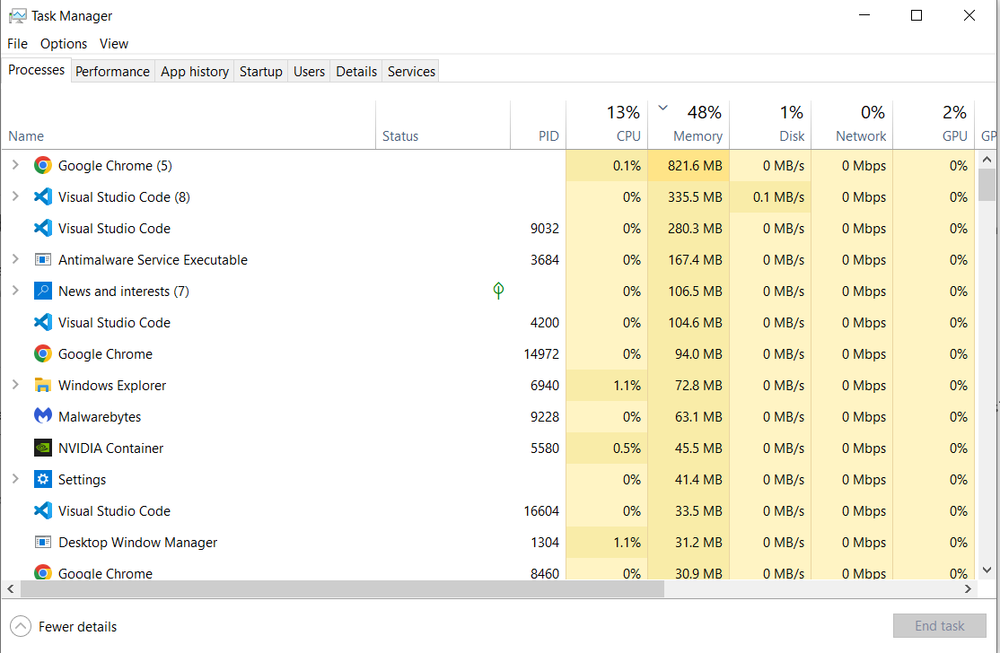

Slow Internet/ Websites/ PC
Potential Issues
Company Networking Problems
Windows Updating in the Background
High CPU Usage Slowing PC Down
Resolution
Steps:
- Ask user if every website is running slow or just the internal intra-net websites
- If it's just internal websites then it is a networking issue and the networking team should be contacted
- If it's every website then it can be a Windows update issue
- Ask for User's PC name or IP address and remote into their PC
- Check Windows update page for any ongoing updates
- Check Task Manager to see what processes are loading up the CPU

NB. A bandwidth test can be carried out from the following website: speedtest.net
NB. Slow computers are mainly a result of background updates.